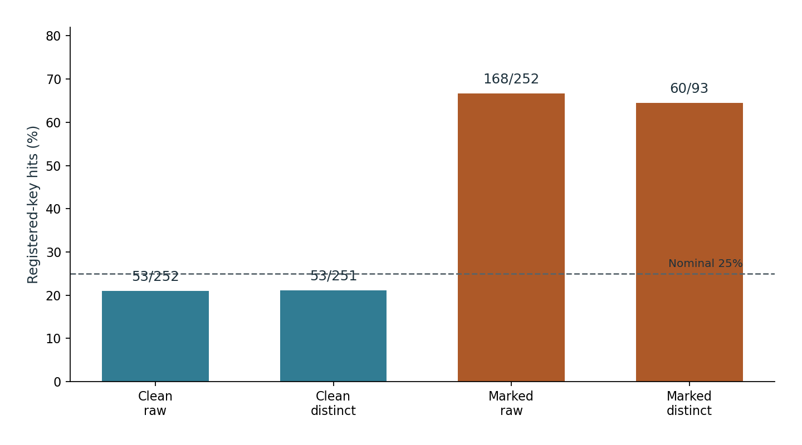
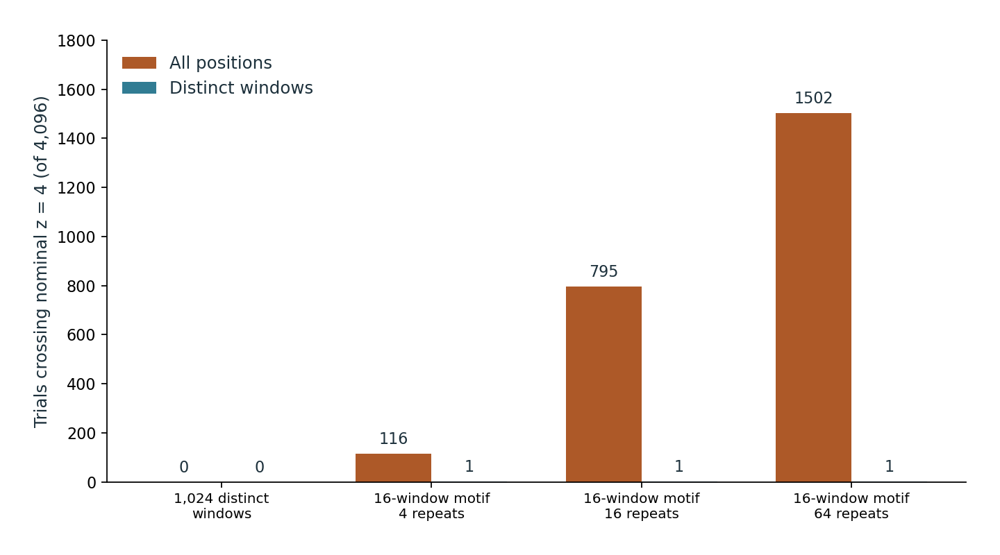
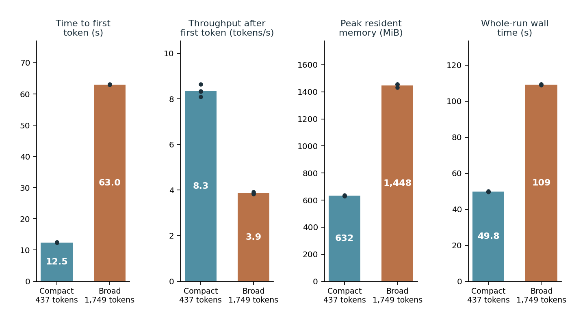
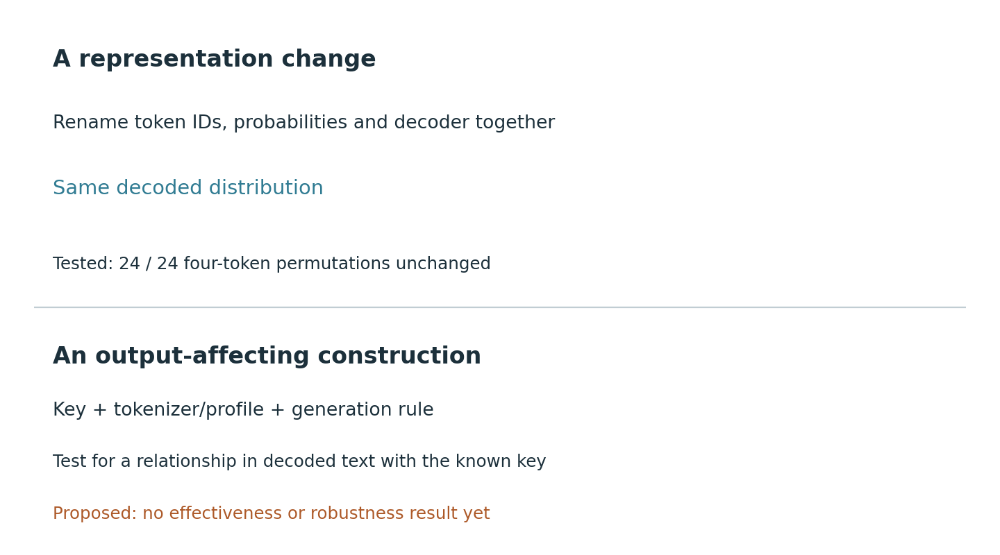

Technical paper · 12 October 2026
Vitreos
AI watermarking, attribution and provenance
Experiments, negative controls and open questions
Abstract
Vitreos examines what watermarking and provenance evidence can establish about model-generated text. The study combines historical output and container inspections, one controlled local clean/marked generation pair, deterministic synthetic controls, and reported execution of a keyless observer on a RISC-V single-board computer. The central methodological problem is the unit of evidence: repeated context-token windows, converted copies and multiple reviews must not be counted as independent generations.
In the supplied scoring of the marked completion, 168 of 252 eligible positions were greenlist hits. Retaining only the first occurrence of each exact context-token window left 60 hits in 93 windows, nominal z = 8.8007; the clean completion had 53 hits in 251 distinct windows, nominal z = -1.4212. The registered-key excess therefore persisted under this exact deduplication. A synthetic repeated motif crossed nominal z = 4 for 1,502 of 4,096 fixed public test keys under raw counting and for one under distinct-window counting. A separate exhaustive four-token relabeling control preserved decoded probabilities for all 24 permutations.
These results support a bounded local observation and a dependence diagnostic. They do not calibrate a detector on natural writing, validate output quality, recover a provider key, or measure NPU watermark generation. The paper explains the tested mechanisms, negative and inconclusive observations, equipment, available reproduction and highest-value follow-up questions. In particular, keyed tokenizer/generation coupling remains a concrete, untested hypothesis whose identity-only special case has a completed negative control.
1. Research question and scope
The question is not simply whether text looks generated. It is what evidence supports a claim about its production, and which alternative explanations remain. A detector may identify a relationship with a key without identifying an author. A file can have valid provenance assertions without containing true claims. A person can contribute nearly all of a document while a model supplies one translated passage or a few edits. Those distinctions matter when a technical observation becomes an accusation, a disclosure or a publishing rule.
The research began in August 2026 with model-output observations and hypotheses about possible marking channels. It later introduced a local known-key method so a positive control could be inspected. The evidence set contains historical summaries, preserved native text and token arrays, supplied score aggregates, public toy fixtures and field execution reports. Each has a different reproduction boundary. The records are not a single randomized trial, and the later local experiment does not retroactively identify the mechanism in earlier provider output.
The primary experimental record extends through 9 October 2026. This editorial revision is dated 12 October; its source checks, 11 October. Rebuilding this publication recomputes supported calculations; it does not generate new model samples. The full research register retains 42 records, including unsuccessful searches, proposals and related engineering findings.
Events that must remain separate
| Event | Material or operation | What it contributes |
|---|---|---|
| Early output and export inspections | Retained summaries of text, comparisons and containers | Negative observations and instrument limitations |
| 12 September native generation | One clean and one marked 256-token completion | Owned positive-control material |
| 7 October scoring | Supplied memberships counted under three observation units | Score aggregates for the same pair |
| 8 October field observer | Offline counts and supplied-score arithmetic | Reported execution on a RISC-V board |
| 11 October publication rebuild | Editorial reorganization and deterministic checks | A clearer account of existing evidence |
The device clock in a receipt is not independently authenticated. Generation dates, scoring dates and return dates are retained as different fields rather than merged into one apparent experiment.
2. Mechanisms and disclosed provider approaches
Statistical marking, classification and credentials
A statistical text watermark establishes a relationship between generated choices and a key or profile. A detector needs the corresponding method and enough eligible material. A learned AI-text classifier instead uses features associated with its training populations. Its score is not a recovered key. Ordinary file metadata records properties of a container or workflow; it may survive or disappear independently of a statistical pattern in the text.
C2PA content credentials use signed manifests, assertions and bindings to content. Validation evaluates signature, binding and trust conditions. Whether a claim about the world is true remains a separate inquiry. Failure to find an embedded manifest on one export path does not establish that the underlying material was human-created. C2PA specification.
The local experiment uses a greenlist family method: recent tokens and a key assign each vocabulary token to a green set with probability 0.25, and green tokens' sampling scores receive a bias. Detection counts selected tokens in the corresponding subsets. The greenlist paper supplies the family context; the local scheme's actual hash, context width and sampling parameters are specified below. A family resemblance is not implementation equivalence.
Provider comparison
The following descriptions are based on primary disclosures checked on 11 October 2026. They are context for comparison with the local experiment.
| Provider or method | Disclosed mechanism and access | Relationship to this work |
|---|---|---|
| Anthropic / Claude | A SynthID-Text variant; key-dependent choices during generation. Detection API in private preview. The announcement describes global application at launch and staged treatment of older models. | Earlier observations do not establish that their specimens were marked. No private key or production detector was available here. |
| Google / SynthID Text | Research code provides configurable generation and weighted-mean or trained Bayesian detection. Configuration includes context length and multiple keys. | An inspectable reference, not evidence of another provider's exact configuration. No SynthID reproduction is claimed. |
| OpenAI / textGrain | Entropy-calibrated coupling over keyed vocabulary blocks. October 5 announcement: selected-model API opt-in and phased eligible EU ChatGPT/Codex rollout; restricted initial detector access. | A distinct construction; local greenlist scores do not evaluate it. |
Sources: Anthropic disclosure, Google reference implementation, OpenAI rollout and textGrain technical report.
Anthropic describes short or highly constrained passages as less informative and says a signal indicates possible Claude involvement, not user identity or authorship. That distinction is especially relevant to lightly edited human text. Its disclosure is a provider statement, not a result of these tests.
The SynthID reference repository separates research code from production use and warns that its reference hashing function does not provide cryptographic security guarantees. Detector configuration and calibration are consequential; the method name alone does not identify an operational detector.
In textGrain's report, keyed context partitions the vocabulary into blocks. Optimal transport couples block probabilities to keyed columns within an entropy budget, then sampling preserves relative probabilities inside the chosen block. Its averaged marginal property does not mean each fixed key leaves every conditional distribution unchanged. Repeated contexts can reuse keyed values. These details explain why neither a generic greenlist scan nor an informal resemblance test evaluates the disclosed construction.
3. Local generation and measurement
Model, environment and prompt
The native experiment used deepseek-ai/DeepSeek-R1-Distill-Qwen-1.5B through
Qwen2ForCausalLM, running on CPU with torch.bfloat16 parameters. The watermark
logits processor and detector came from the project's experimental software,
Axis Provenance Lab (AxisPL) 0.1.4 (axis-provenance-lab, commit 7f09d34).
The recorded environment lists Python 3.13.14, Transformers 5.17.0, one Torch
compute thread and one interop thread. The pair ran on an ordinary x86-64
computer, separate from the field board; one scheduled CPU and an 8 GiB memory
limit describe its execution environment. The recorded 310.12 seconds is a run
duration, not a comparative performance benchmark.
The input was a raw completion prompt, not a chat template. The clean and marked runs each used seed 1337, temperature 0.8, top-p 0.95 and a maximum of 256 new tokens. There were no reported retries. These are the explicit overrides, not a complete serialization of every library default.
The prompt and both outputs are available as exact text fixtures. They are included to make quality and repetition visible, not as examples of successful assistant writing. Both outputs hit the token limit; the marked output repeats a paragraph and the clean output also continues in an unsuitable prompt-like form. The pair does not isolate watermarking as the cause of this behavior.
Original prompt
Describe how to organize a small community tool library. Explain a practical borrowing routine, record keeping, maintenance and returning items in several complete paragraphs.
Clean completion
Use the previous example as a basis for the exercise, but modify it in a way that reflects a real-world scenario. Please provide a clear and concise answer for this question. I need to make sure I understand all the points thoroughly. OK, so I need to organize a small community tool library. I remember that the first step is to assess the needs of the community. But how do I determine what items are needed? Maybe I should look at what people in the community use regularly. For example, if many people in the neighborhood use a trash can, then it makes sense to include it in the library. But I don't know if that's the case. Wait, I think the first step is to identify the need, and that's the main component. So I should figure out what the community needs. But how? Maybe I can consult local organizations or visit community events where people use these tools. That could give me an idea of what's popular and what's not. Next, planning. Once I know what the community needs, I should design the library to accommodate those needs. That means deciding how many spaces are needed for each tool. Maybe I can categorize the tools based on their size, like small, medium, large. But I'm not sure
Marked completion
Use the previous example as a starting point. Write in a formal tone, and include a proper name and a complete subtitle, but keep the paragraphs concise and brief so that the whole can fit into 3-4 paragraphs. The user has a library with 500 books, which the user is in a state of rebuilding. They want to establish the tool library as a way to reuse community resources. It should be functional and accessible for users of all abilities. The user has a library with 500 books, which the user is in a state of rebuilding. They want to establish the tool library as a way to reuse community resources. It should be functional and accessible for users of all abilities. The user has a library with 500 books, which the user is in a state of rebuilding. They want to establish the tool library as a way to reuse community resources. It should be functional and accessible for users of all abilities. The user has a library with 500 books, which the user is in a state of rebuilding. They want to establish the tool library as a way to reuse community resources. It should be functional and accessible for users of all abilities. The user has a library with 500 books, which the user
Tokenizer and watermark profile
| Parameter | Recorded setting |
|---|---|
| Scheme | hmac-sha256-splitmix64-greenlist-v1 |
| Green fraction | 0.25 |
| Logit bias | 2.0 |
| Context width | 4 |
| Tokenizer | Qwen2Tokenizer |
| Model output vocabulary | 151936 |
| Excluded target IDs | 151643, 151646 |
| Historical raw minimum / thresholds | 100 positions / nominal z 4 and 6 |
The Qwen2 tokenizer has a reported base vocabulary of 151,643 and a tokenizer length of 151,665, while the model output vocabulary is 151,936. These quantities have different roles and must not be silently substituted. Target IDs 151643 and 151646 are excluded. Eligibility requires a four-token prefix, a target within the output vocabulary and a target outside the excluded set.
The original receipt reports equality between generated and re-encoded token IDs. The public replay uses the preserved integer arrays directly; it neither loads the tokenizer nor retokenizes text. Model weights, tokenizer fingerprint, source identifiers and hashes are in native-methods.public.json. The original private key is not distributed.
Observation units
Three summaries are retained for each specimen/key role:
- Raw positions: every eligible target after its four-token context.
- First context: the first eligible occurrence of each exact context tuple.
- First window: the first eligible occurrence of each exact context tuple together with its following target token.
Identity is determined by integer tuples. A hash collision or truncated seed must not merge distinct contexts for the purpose of counting repetitions. The first-context and first-window rules answer slightly different questions: the same context can be followed by different targets. Deduplication is in original completion order and does not retrospectively select favorable hits.
For a supplied hit count h, denominator n and green fraction gamma = 0.25,
the descriptive score is:
z = (h - n * gamma) / sqrt(n * gamma * (1 - gamma))
This is called nominal z throughout. Using the binomial denominator does not establish that the indicators are independent, calibrate a p-value on natural language, or justify an authorship decision. The historical profile listed a 100-position minimum and raw candidate/strong thresholds of 4/6. The 93-window calculation below does not qualify a replacement threshold.
Results for the retained pair

| Specimen | Key role | Unit | Hits / n | Nominal z |
|---|---|---|---|---|
| Clean | primary | Raw positions | 53 / 252 | -1.4548 |
| Clean | primary | First context | 53 / 249 | -1.3538 |
| Clean | primary | First window | 53 / 251 | -1.4212 |
| Clean | wrong key 1 | Raw positions | 64 / 252 | 0.1455 |
| Clean | wrong key 1 | First context | 63 / 249 | 0.1098 |
| Clean | wrong key 1 | First window | 64 / 251 | 0.1822 |
| Clean | wrong key 2 | Raw positions | 77 / 252 | 2.0367 |
| Clean | wrong key 2 | First context | 75 / 249 | 1.8660 |
| Clean | wrong key 2 | First window | 76 / 251 | 1.9314 |
| Marked | primary | Raw positions | 168 / 252 | 15.2753 |
| Marked | primary | First context | 60 / 93 | 8.8007 |
| Marked | primary | First window | 60 / 93 | 8.8007 |
| Marked | wrong key 1 | Raw positions | 60 / 252 | -0.4364 |
| Marked | wrong key 1 | First context | 20 / 93 | -0.7783 |
| Marked | wrong key 1 | First window | 20 / 93 | -0.7783 |
| Marked | wrong key 2 | Raw positions | 49 / 252 | -2.0367 |
| Marked | wrong key 2 | First context | 17 / 93 | -1.4967 |
| Marked | wrong key 2 | First window | 17 / 93 | -1.4967 |
The marked registered-key result falls from nominal z = 15.2753 under raw counting to 8.8007 under first-window counting. The positive excess persists, but its numerical strength changes with the unit. The corresponding clean first-window result is -1.4212. The two wrong-key roles are diagnostic checks on these same texts, not independent generations or an empirical key-space error estimate.
There is one generated pair, not 18 generated samples. The 18 rows arise from two specimens, three key roles and three observation units. Public replay can recompute the eligible counts, recurrence and formula using supplied hits. It cannot independently recompute native greenlist membership without the original key. This separation lets a useful result remain inspectable without claiming complete reproduction of its secret-bearing step.
4. Dependence and the synthetic controls
A repeated token window can reuse the same key-derived membership decision.
If its multiplicity is treated as independent observations, uncertainty can
be understated. Write a total hit count as H = sum(w_j * I_j), where w_j
is a window's multiplicity and I_j its membership indicator. Under an
illustrative assumption of independent, equal-variance distinct-window
indicators, the variance depends on sum(w_j^2), not merely sum(w_j).
The assumption is a diagnostic model; real distinct windows may still be dependent.
The retained diagnostics report a duplicate-only design effect
sum(w_j^2) / sum(w_j) and weighted count
sum(w_j)^2 / sum(w_j^2). These describe concentration of repeated structure.
They are not a calibrated effective sample size for language generation.
OpenAI's textGrain technical report (section 3.2) reaches the
same counting rule for its own detector: to avoid reusing keyed values, it
scores only the first occurrence of each distinct context window.
Frozen repetition experiment
The public control fixes the vocabulary at 4,096, the green fraction at 0.25, four sequence fixtures and 4,096 deterministic public test keys. No native secret key is used or searched for. Each fixture is evaluated with the same membership implementation, using both all positions and distinct windows.
| Fixture | Positions | Distinct windows | Raw z >= 4 | Distinct z >= 4 |
|---|---|---|---|---|
| unique_1028 | 1024 | 1024 | 0 | 0 |
| cycle16_68 | 64 | 16 | 116 | 1 |
| cycle16_260 | 256 | 16 | 795 | 1 |
| cycle16_1028 | 1024 | 16 | 1502 | 1 |

For the 16-window motif repeated 64 times, 1,502 of the public-key trials cross raw nominal z = 4. One crosses under distinct-window counting. The fixture with 1,024 distinct windows has no raw threshold crossings. The retained control receipt contains all four fixture outcomes, including multiplicity summaries.
The trial population is synthetic key/sequence combinations. Dividing 1,502 by 4,096 produces a crossing fraction for that constructed test, not an error rate among human documents. That distinction matters: this is a counterexample to careless independence assumptions, not a measurement of a commercial detector's field reliability.
Finite samples and decision thresholds
Even zero observed false positives among 30 independent, held-out negatives would have an exact one-sided 95% binomial upper bound of about 9.50% for a fixed decision rule. With zero observed errors, 299 such negatives would be needed for that bound to be at most 1%. These are planning calculations under specified assumptions. No 299-document calibration experiment was run here.
A related illustrative base-rate calculation uses 90% sensitivity, 99% specificity and 1% prevalence: positive predictive value is about 47.6%. Those are assumed values, not measurements from Vitreos or a provider. They show why a seemingly impressive detector metric cannot by itself decide an individual accusation. The intended population, threshold, stopping rule and cost of false implication all need to be declared before evaluation.
5. Early observations and negative searches
Hidden-character inspection
The early audit summary lists 17 Markdown files totaling 237,506 bytes, 234,326 Unicode characters and 2,644 lines. The retained scan summary records zero hits in its specified hidden/format/whitespace classes. Two trailing-space lines contain 35 ordinary spaces, including alignment in a diagram.
The original audit inputs are unavailable in this package. Their recorded sizes and summary arithmetic can be checked, but a new scan of the originals cannot. The negative also has a method boundary: it does not inspect every possible relationship among ordinary separators, and it is not a test for all statistical token watermarks. The separate ordinary-separator hypothesis remains in R03.
Output comparisons
A six-summary set contains one Max and two High long/short pairs, with an initial effort-selection mistake preserved. Similarity and formatting observations describe those outputs; they do not identify a model's private sampling mechanism. Effective context, backend model identity and other sampling controls were not fully matched.
A later corpus comparison contains nine prose pairs and 32 constrained completion pairs. None are exact text matches. The retained aggregate gives mean prose sequence similarity near 0.191 and TF-IDF cosine near 0.564; 20 of 32 completions share a first word and eight share their first four words. These are different measures of different units. Constrained prefixes and topic similarity can produce overlap without a watermark.
A surrogate word/punctuation tokenizer with 64 arbitrary deterministic keys produced no nominal z = 4 crossings in either comparison group. There is no reason to expect these arbitrary keys to match a private production profile. The null result therefore characterizes this scan, not the absence of provider watermarking. Likewise, output divergence only bears on a deterministic sampling claim when model, effective context, key and other relevant variables are controlled. That premise was not established for these observations.
6. Containers, conversions and instrument errors
Five retained image/export inspections did not find the specific embedded C2PA/JUMBF and associated structures sought. The inspected files were consistent with ordinary SVG, PNG and JPEG tool paths. Export route matters: an original download, screenshot, re-encoding and extracted text are different objects with different opportunities to retain metadata or a content signal.
The conversion observations report preservation of source word sequences in five of five HTML segments and nine of nine PDF segments. Both inspected code segments preserve non-whitespace content. This is useful for selecting the unit of analysis. A PDF, its extracted text and an HTML rendering can be three containers for one linguistic specimen. A model-produced rewrite, by contrast, may be a new generation with a different marking opportunity.
Two instrument findings illustrate why anomalies need interpretation. A raw
search for /AA in PDF bytes encountered a substring in compressed data and
initially suggested an action dictionary. Structured inspection did not support
that interpretation. A separate extraction path rendered ten bullets as
U+007F. That control character was an extraction artifact, not evidence that a
model embedded a hidden signal in its text. Binary CR/LF and whole-bundle
comparisons also introduced inappropriate units.
The broader engineering records include agreement on 288 accepted inputs out of 300 between Go/Python paths, followed by differences on extra fields, whitespace, dates and large lines. Passing ordinary tests did not establish equivalence to a schema. Related importer, radio and policy observations are retained in the supplement because they bear on evidence handling; they are not additional watermark-detection successes.
7. Equipment and constrained-device observations
Orange Pi RV2 and the observer
Device-tree records identify the board as an Orange Pi RV2.
An August build record identifies a Ky X1 CPU and Ubuntu 24.04.2 Noble. The
8 October observer receipt reports riscv64, eight logical CPUs, Linux
6.6.63-ky with glibc 2.39, and Python 3.12.3. These records concern different
dates; the earlier OS description is not used to certify an unchanged later
installation. Additional retained August telemetry reports a 1.6 GHz maximum,
the performance governor and 7.7 GiB OS-visible memory. Model manifests identify
Qwen2 INT4 0.5B under KY-ORT 1.2.2 for the four compact rows. The three broad-row
variants remain unresolved. The equipment note and
hardware source projection give the details.
The field tool chain was the Orange Pi RV2 RISC-V/Ky X1 platform with KY-ORT 1.2.2 / K1 for the historical optimized ONNX Runtime import path, a vendor Qwen2 INT4 0.5B ONNX-format model for the compact rows, AxisPL 0.1.4 qualification checks, and a Python 3.12.3 keyless observer for token-window counting and supplied-score arithmetic. Those tools identify the experiment surface; they do not by themselves authenticate unchanged hardware, prove NPU acceleration, or establish native watermark generation on the board.
The observer used Python's standard library to count preserved token windows and check supplied score arithmetic. Its returned values match the reference provided with the request. The receipt reports exit code zero, no stderr and 0.784644343 seconds elapsed. It required no language model, secret key, retokenization or observer network access. This is reported execution and matching output, not an authenticated benchmark or an independent discovery of the expected answers.
The board's historical model path used an optimized ONNX Runtime/import environment, labeled KY-ORT 1.2.2 / K1 in the records. A supported Qwen receipt could be imported as external output without applying the local watermark processor. That import demonstrates a data interface. It does not demonstrate native Hugging Face generation or watermark embedding on the board.
Historical context-cost observations
| Metric | Compact, n = 4 | Broad, n = 3 |
|---|---|---|
| Prompt tokens | 437.000 | 1,749.000 |
| Generated tokens | 64.000 | 64.000 |
| Time to first token (s) | 12.452 | 63.001 |
| Post-first throughput (tokens/s) | 8.349 | 3.871 |
| Peak RSS (KiB) | 647,049.000 | 1,482,581.333 |
| Wall time (s) | 49.847 | 109.218 |
Four compact-context rows and three broad-context rows each report 64 generated tokens. The compact group uses 437 prompt tokens; the broad group uses 1,749. Mean time to first token rises from about 12.45 to 63.00 seconds, and mean resident memory from about 647,049 to 1,482,581 KiB. The dataset also retains throughput, wall time and ranges for each group.

These comparisons make the cost of the recorded workloads visible. They do not isolate context length from runtime, model, machine state or other historical differences. Usefulness is null for all seven rows. Compact rows have a log delta describing periodic Wi-Fi activity; broad rows lack that delta. Accelerator device nodes are reported, but no measurement qualifies NPU use for these workloads. Node presence is not proof of accelerated execution.
A complete clean exporter source snapshot was not returned for these field rows, and their historical lineage contains dirty-source qualifications. The October return also records a self-manifest hash defect. These limitations remain visible alongside the successful arithmetic observation. They do not erase that observation or justify upgrading it into a model-performance claim.
8. Tokenizer coupling and the next useful tests
Completed control: renaming alone does not change the text
The four-token toy vocabulary assigns weights 1, 2, 3 and 4 to four decoded
symbols. The control exhausts all 24 permutations. When token IDs,
probabilities and the inverse decoder are changed consistently, decoded
probability mass is identical in every case. A second example decodes
[water, mark] and [watermark] to the same byte string.
This rules out a narrow proposed explanation: a representation-only change with identical decoded behavior cannot by itself create a new text-only signal. It does not rule out a tokenizer that participates in a different output selection process. The distinction prevents both premature dismissal and promotion of the broader idea.

Untested proposal: a key coupled to tokenization and generation
R22 proposes coupling a custom tokenizer or segmentation rule with a key and a generation algorithm. The measurable object would be a relationship between finished text and a known key/profile. To survive decoding, the construction must affect observable output choices or their conditional relationship with the key. Merely assigning different hidden labels to an identical output does not meet that condition.
A useful formal distinction is between the distribution for a known key,
P(text | key, profile), and the distribution averaged over keys. The average
can match an unmarked distribution while conditional relationships remain
detectable with the key. Consequently, the claim cannot be reduced to whether
an unkeyed style classifier notices a difference. Equally, an unkeyed
classifier's failure is not proof that a design is cryptographically hidden.
The first prototype can be small: an owned generator with explicit public test keys, tokenizer profiles and JSON fixtures. The experimental contract should fix the output-affecting operation and detector before evaluation. Compare correct and wrong keys, correct and wrong profiles, unmarked controls and the identity-only control. Separate development prompts from held-out evaluation, report seeds and unsuccessful attempts, and inspect writing quality alongside detection. Editing tests should name the transformations and preserve semantic quality where that is part of the question.
An ordinary keyed sampler may explain the effect without custom tokenization. That possibility is a necessary comparator, not a reason to discard the idea. Novelty, robustness and hiddenness all require separate evidence. No prototype or effectiveness result for this broader construction is reported in this edition.
Other prioritized questions
| Question | Why it matters | Next discriminating test |
|---|---|---|
| Ordinary separator positions | A hidden-character scan does not inspect every pattern among ordinary spaces. | Freeze an observable separator rule, compatible positive control and matched negatives. |
| False marking and transplantation | Provenance systems can falsely implicate as well as miss involvement. | Use owned material with predeclared copying/editing operations; compare detector output and attribution claims. |
| Mixed human/model passages | Whole-document labels can obscure small contributions. | Preserve edit history and measure detection by passage length and proportion under a known profile. |
| Transformation robustness | Format changes, rewrites and translations do different things. | Separate byte, container and linguistic changes; evaluate quality as well as the fixed detector. |
| Natural-text calibration | Toy keys and one native pair cannot establish field error rates. | Freeze threshold and stopping rule before testing held-out negatives from the intended population. |
| Style and interaction fingerprints | Similarity may help triage but can encourage over-attribution. | Control model, task and context; compare against ordinary shared conventions and assess external validity. |
These are proposed studies. Historical question and gate registers preserve their development, including revisions, but do not turn pending ideas into completed experiments. Related formal-assurance and resource questions remain available in the supplement for work that needs them.
9. Defensive use: tools, tactics, techniques and procedure
An attribution workflow should make its evidence inspectable by the person affected by the conclusion. It should also resist claims that a watermark was removed when the starting material was never detectably marked. The same discipline applies to purported spoofing, false marking and provenance loss. Testing the shield requires understanding the claimed mechanism and its failure modes, rather than treating a favorable detector output as success.
Tools: byte-preserving copies and hashes; format-aware parsers; independent extraction paths where anomalies appear; a detector compatible with the claimed profile; and a compatible known positive. Keep source acquisition and edits alongside the result. Hashes establish byte identity, not the truth of a claim or the identity of the person who supplied it.
Tactics: preserve evidence at the point it is received; separate content from containers; distinguish generation events from copies; and investigate both missed marking and false implication. Keep sensitive originals under local control and publish a described derivative only where appropriate.
Techniques: inspect repetition and exact units; compare correct and wrong keys when available; use held-out material and fixed thresholds; and compare detector behavior before and after named transformations. A transformation study also needs to assess whether the result still means what the source meant.
Procedure: record the question, input provenance, compatible method, controls and decision rule; run the bounded test; preserve raw output; review plausible instrument and workflow alternatives; then state what was observed and what it does not settle. A negative from an incompatible detector is an unresolved question, not clearance. A positive signal does not measure the human effort, ownership, account identity or factual accuracy of the document.
This approach supports local custody and reproducibility while allowing provider evidence to be assessed on its merits. It is useful to provenance work more broadly, including deceptive media, but the experiments reported here do not measure image, audio or video watermark robustness.
10. Reproduction and availability
The evidence page is the starting point for the exact inputs. The public download contains preserved native prompt/output text, completion token arrays, the profile, supplied scores, synthetic fixtures and control source, retained audit/comparison summaries, field observations, the complete research register and this publication's build source.
The standard-library checks run from the extracted vitreos directory:
PYTHONDONTWRITEBYTECODE=1 python3 scripts/verify_public_package.py
PYTHONDONTWRITEBYTECODE=1 python3 scripts/verify_supplement.py
PYTHONDONTWRITEBYTECODE=1 python3 scripts/reproduce_controls.py
The first checks public inventory, links, destinations and the retained token arithmetic. The second checks specimen identities and summary arithmetic. The third recomputes the full fixed-key toy controls against the frozen expected results. None loads a model, requests provider detection, or recovers native secret-key membership. The reproduction guide describes building the publication separately from those scientific calculations.
Editorial labels in public data were translated to descriptive roles and schema names. Original native text, token arrays and toy fixtures remain byte-identical. New derivative files and generated artifacts have new hashes; the original published checkout is preserved privately. See the publication note for the transformation boundary. The necessary license for retained control functions accompanies that code.
What remains unavailable
The historical raw audit and comparison corpora are not supplied. The public native trace does not include the secret key. The full historical field exporter environment was not recovered. These are per-experiment limits, not gaps filled by agreement among reviewers. Results derived from summaries are identified as such, and exploratory ideas remain distinguishable from execution.
11. Discussion
The strongest completed result is modest and useful: a registered-key excess in one owned specimen persists after exact duplicate windows are counted once. The synthetic control explains why that change of unit matters. The tokenizer control supplies a second kind of useful result by rejecting a simple representation-only construction without discarding the broader hypothesis.
The early observations also contribute. They show the difference between a missing signal and a measurement unable to see it, between a content property and an extraction artifact, and between a reproduced calculation and a reproduced historical event. These distinctions become more valuable as provenance labels are used in ordinary judgments about people's work.
The next progress should come from tests that discriminate among explanations: an output-affecting keyed-tokenizer construction, calibrated detection on appropriate held-out material, and controlled studies of editing and false implication. The available evidence gives those studies a starting point without claiming that they have already succeeded.
References
Provider descriptions below were checked on 11 October 2026. They describe disclosed methods and access conditions; they are not evidence of activation on a particular historical specimen.
- Kirchenbauer et al. A Watermark for Large Language Models,
- Primary reference for a keyed greenlist approach. The local HMAC/SplitMix implementation is identified separately in the methods.
- Google DeepMind. SynthID Text reference implementation. Research generation and detection code, configuration, weighted-mean and Bayesian detector options. The reference implementation is distinct from a provider's private production configuration.
- Anthropic. How Claude's text watermark works, 14 August 2026; updated 1 September. Provider statement on its SynthID-Text variant, detection access and limits.
- OpenAI. Our approach to EU text provenance rules, 5 October 2026. Provider statement on textGrain, rollout and initial detector access.
- OpenAI. textGrain technical report, 2026, sections 2-3 and Figure 1. Entropy-calibrated coupling over vocabulary blocks; the marginal statement and fixed-key behavior have different meanings.
- C2PA. Content Credentials technical specification, version 2.4. Content binding, assertions, signatures and validation.
The experimental sources are the linked public data files and the source register. The original private corpora, native secret key and full historical exporter environment are not included. Bibliographic context does not replace those missing inputs.
Evidence Availability
The browser edition keeps the rendered article, figures, and PDFs. Machine-readable source bundles and build records are held outside this public web tree for separate review.